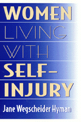

<body bgcolor="#FFFFFF" text="#000000" link="#0000FF" vlink="#CC0000" alink="#CC0000"><center><hr width="350" size="1" align="center" noshade>A compassionate view of a stigmatized condition<hr width="350" size="1" align="center" noshade><p><a href="https://cdcshoppingcart.uchicago.edu/Cart/ChicagoBook.aspx?ISBN=9781566397209&&PRESS=temple" target="_top">Buy this book!</a> | <a href="https://cdcshoppingcart.uchicago.edu/Cart/Cart.aspx?PRESS=temple" target="_top">View Cart</a> | <a href="https://cdcshoppingcart.uchicago.edu/Cart/Cart.aspx?PRESS=temple" target="_top">Check Out</a></p><p></p></center><!--none//--><h1>Women Living with Self-Injury</h1>
<h3>Jane Wegscheider Hyman</h3>
<P>cloth 1-56639-720-0 $61.50, Sep 99, <FONT COLOR=#990033>Out of Stock Unavailable</FONT>
<br>paper 1-56639-721-9 $30.95, Sep 99, <FONT COLOR=#990033>Available</FONT>
<br>Electronic Book 1-43990-593-2 $30.95 <FONT COLOR=#990033>Out of Stock Unavailable</FONT>
<BR> 248 pp
6x9
</P><BLOCKQUOTE><I>"Hyman describes the complexities and paradoxes of self injury with remarkable fidelity to the lived experiences of those she interviewed. Her clear and resounding message is that acceptance and understanding lay the groundwork for healing and growth. This book will richly reward those whose hearts and minds are open to the call."</I>
<BR>&#151<B>William Kadish</B>, Medical Director of the Psychiatry and Addictions Service, Marlborough Hospital, Marlborough, MA<I></I></BLOCKQUOTE>
<p>They cut their arms and legs with knives and razors, scratch at their skin, burn, bruise, or stick themselves with cigarettes, hammers, pins and other objects, bang their heads and limbs, and break their own bones. Although women who live with self-injury have recently gained recognition in the media they have, as a result, become even more stigmatized.
<p>In this book, author Jane Wegscheider Hyman sheds light on this misunderstood condition. Fifteen women talk about their battle with self-injury and explain how and why they repeatedly and deliberately injure themselves. Most admit they do it because it makes them feel high or safe. They also describe living with ceaseless shame, secrecy, and fear of discovery that could make them unemployable and ostracized. Candidly discussing their attempted and successful recoveries, they reveal the impact living with self-injury has on their day-to-day lives&#151where they are competent workers, partners, friends, and mothers.
<p>Hear the voices of these women as they speak to a public that generally sees self-injury as frightening, senseless, and repulsive. Concealing any resulting scars or other signs of injury is crucial for them and partly dictates their daily routines, choice of clothes, and appropriate lies to excuse any traces of injury. For these productive women who work outside of the home and often raise children, hiding self-injury is of paramount importance during their workdays and in their relationships with partners, families, and friends.
<p>Hyman's approach is unique in that she not only talked to these women but she really listened to their stories&#151something rare in the misunderstood realm of self-injury. Professionals, perplexed by self-injury, have not always tolerated its complexity. As a result those who injure themselves have remained shrouded in secrecy, isolation, and shame&#151until now.
<p>This book offers compassion as well as encouragement for recovery by making available the emotional experiences of sufferers in their own words. It is an important book for those who self-injure, their loved ones, anyone who knows of or suspects self-injury in a friend, and mental care professionals.
<BR>&nbsp;<h2>Excerpt</h2><P>Excerpt available at <a href="http://www.temple.edu/tempress">www.temple.edu/tempress</a></p>
<BR>&nbsp;<h2>Reviews</h2>
<P><I>"Hyman embraces the complexity and ambiguity of self-injury, thus creating a respectful context within which these women's words shine with clarity and richness.... this is a book every professional interacting with trauma survivors should read, particularly mental health workers and emergency room personnel. Perhaps most importantly, the thousands of people&#151men and women&#151who self-injure will breathe a sigh of relief that someone has gently but firmly opened the door to one of the most hidden, shame-laden yet surprisingly common aspects of human behavior."</I>
<BR>&#151<B>Robin Connors</B>, Ph.D., author of the forthcoming <I>Self-Injury: Psychotherapy with People Who Engage in Self-Inflicted Violence</I>
<P><I>"Jane Wegscheider Hyman's book is revolutionary in its courageous simplicity&#151it speaks of the powerful and passionate lives of women living with self-injury. It is an art to create a medium for women's voices, especially those long silenced and shamed. </I>Women Living with Self-Injury<I> paints a complex portrait of the lives of women whose voices have previously been whispers in the dark."</I>
<BR>&#151<B>Ruta Mazelis</B>, publisher of "The Cutting Edge: A Newsletter for Women Living with Self-Inflicted Violence"
<p><i>"The book is both fascinating and educational. On the one hand, to read the actual words of someone who self-injures is fascinating to a therapist.... On the other hand, the experienced therapist will have no problem recognizing the characteristics of an addictive process. Through all the stories and all the justifying words, what stands out is that these women are addicted to hurting themselves."</i>
<br>&#151<b><a href="http://mentalhelp.net/books/books.php?type=de&id=387" target="new">Metapsychology Online</a></b>
<p>Read a <a href="../authors/1409_review.pdf">reveiw</a> from <I>The Prevention Researcher Supplemental Resource Issue</I>, Volume 8 (December 2001), written by Faedra Lazar Weiss (pdf).
<p>Read a <a href="../authors/1409_review2.pdf">reveiw</a> from <I>Journal of Trauma & Dissociation</I>, Volume 3.2 (2002), written by Su Baker (pdf).
<p><i>"</i>Women Living With Self-Injury<i> is an important first step in making public self-abusive behavior. It does so in a revealing, fascinating, and responsible manner, greatly increasing our understanding of self-injury and its treatment, and should be required reading for social workers, counselors, and therapists."</i>
<br>&#151<b><i><a href="http://www.findarticles.com/p/articles/mi_qa3625/is_200109/ai_n8985518" target="new">Families in Society</a></i></b>
<BR>&nbsp;<h2>Contents</h2><P>
<p>Acknowledgments
<br>Introduction
<br>Prologue: Home, Sweet Home
<br>1. The Last Secret: Self-Injuring Women Speak
<br>2. From Childhood Abuse to Adult Behavior
<br>3. Meredith Tells Her Story
<br>4. Self-Injuring Women at the Workplace
<br>5. Life with Lovers, Families, and Friends
<br>6. Helena's Struggle with Compulsion
<br>7. Help for Women Who Self-Injure and Their Therapists
<br>8. Sarah O.'s Past and Present
<br>9. Recovery: Hopes and Achievements
<br>Epilogue: Three Faces of Self-Injury
<br>Resources
<br>Notes
<br>Index
</P><BR>&nbsp;<H2>About the Author(s)</H2>
<P><B>Jane Wegscheider Hyman</B>, Ph.D., a researcher and writer on women's health contributed to both <i>Ourselves, Growing Older</i> and <i>The New Our Bodies, Ourselves</i>. She is author of two other books. Over the years, her interest has shifted from physical to mental health, partly through her own experiences with obsessive-compulsive disorder and depression, and partly because of her prior work on seasonal affective disorder, anorexia, and bulimia. During her graduate studies in psychology, she specialized in mental health problems that primarily afflicted women.</P>
<BR><H2>Subject Categories</H2>
<p><A HREF="/tempress/women.html" TARGET="_top">Women's Studies</a>
<BR><A HREF="/tempress/health.html" TARGET="_top">Health and Health Policy</a>
<BR><A HREF="/tempress/psycho.html" TARGET="_top">Psychology</a>
</p>
<p align="center"><a href="https://cdcshoppingcart.uchicago.edu/Cart/ChicagoBook.aspx?ISBN=9781566397209&&PRESS=temple" target="_top">Buy this book!</a> | <a href="https://cdcshoppingcart.uchicago.edu/Cart/Cart.aspx?PRESS=temple" target="_top">View Cart</a> | <a href="https://cdcshoppingcart.uchicago.edu/Cart/Cart.aspx?PRESS=temple" target="_top">Check Out</a></p><p><font face="Arial" size="1"><a href="copyright.html" onMouseOver="window.status='Web Copyright Policy';return true;" onMouseOut="window.status=''" title="Web Copyright Policy">&copy;</a> 2015 <a href="http://www.temple.edu" target="new" onMouseOver="window.status='Link to Temple University home page';return true;" onMouseOut="window.status=''" title="Link to Temple University home page">Temple University</a>. All Rights Reserved. http://www.temple.edu/tempress/titles/1409_reg.html</font></p>